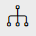
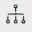
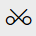
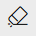
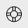

Art “Ajouter Art”vous donnera des choix disponibles cliparts dans diverses catégories. Cliquez sur une des cliparts pour l'ajouter dans la zone de conception. Vous pouvez en outre choisir et modifier les propriétés de clipart, comme la taille, la couleur, la frontière, l'alignement de la zone de designs WRT etc.
Possibilité de nombreuses formes vous permet de dessiner des formes en utilisant l'outil de main libre de crayon, outil de ligne, rectangle et ellipse. Une fois que vous avez dessiné une forme dans la zone de designs, vous pouvez décorer la forme avec des effets comme contour, couleur de remplissage, la taille, l'alignement WRT la zone de designs etc.

TÉLÉCHARGEMENT Téléchargez vos propres oeuvres, les images et les photos à partir de votre stockage local ainsi que des images d'importation à partir de Picasa, Flickr et Facebook.
Also You can generate professional QR codes in 8 different data types. Get transparent QR codes with full color pallet for instant use in your design.

Conceptions Offre aux utilisateurs une bibliothèque de modèles prêts à imprimer ou pouvant être personnalisée davantage. Vous pouvez cliquer sur n'importe quel design pour le personnaliser davantage avec vos paramètres personnels.
Le "outil de crayon» permet dessin à main levée. L'épaisseur et la couleur des coups pourraient être modifiés en utilisant les outils "Palette de couleurs".
Pour dessiner l'une des formes ci-dessus, placez le curseur dans la zone de designs et glisser à la taille de la forme requise. Une fois établie, vous pouvez modifier les propriétés de l'objet comme la couleur de remplissage, style de bordure et les paramètres de couleur, etc.

Donne option pour tracer une ligne droite et connecter deux objets par une ligne.

En cliquant sur l'icône "Rectangle" ouvre une palette sous-menu offrant le choix entre trois options différentes: rectangle, carré et les mains gratuites dessin rectangle. Les deux premières options sont très simples. La troisième option permet à l'utilisateur d'esquisser un rectangle main libre qui sera converti dans un véritable rectangle immédiatement après l'achèvement.
En cliquant sur l'icône "Ellipse" ouvre une palette sous-menu offrant le choix entre trois options différentes: Ellipse, Cercle et les mains gratuites dessin ellipse. Les deux premières options sont à nouveau très simple. La troisième option permet à l'utilisateur d'esquisser une ellipse main libre qui sera converti dans un véritable ellipse immédiatement après l'achèvement.

Choisissez la police: Cette option vous donnera un choix de différents type prédéfini de police en utilisant le menu déroulant. Choisissez celui que vous aimez à appliquer sur l'objet de texte sélectionné.
Taille De Police: Tenez la poignée du curseur et faites glisser vers la gauche ou la droite pour diminuer ou augmenter respectivement la taille en proportion.
Le Style De Police: Changez le style de police Gras ou Italique ainsi que l'aligner à gauche, droite ou au centre dans la zone de texte.
Aligner Alignez objet unique à gauche, droite, centre, haut, milieu et bas WRT la zone de designs. Quand un groupe d'objets est sélectionné, vous pouvez choisir d'aligner tous les objets WRT sélectionnée le plus petit objet dans le groupe, w.r.t. le plus grand objet dans le groupe, w.r.t. de l'autre ainsi que w.r.t. la zone de page.


Groupe Vous pouvez sélectionner plusieurs objets (en faisant glisser votre souris sur les objets souhaités ou en appuyant sur la touche "Shift" et sélectionner des objets individuellement) et le groupe en appuyant sur le bouton du groupe, qui modifie l'apparence de la sélection. Les objets une fois indépendante apparaît maintenant dans la sélection de groupe comme un objet entier. Avant le regroupement, chaque objet individuel apparaît délimitée par un rectangle en pointillés mais après regroupement rectangles pointillés disparaissent et sont remplacés par un rectangle en pointillés uniques délimitant l'ensemble du groupe. Vous pouvez maintenant modifier tous les objets dans le groupe en une seule fois avec les options de montage. Groupement affecte aussi l'apparence "Icône Barre d'outils" que le bouton de groupe est un bouton à bascule qui convertit bouton pour dissocier pour la sélection actuelle.

Dissocier Cette option fonctionne sur un groupe d'objets. Une fois dissocié, chaque objet peut être géré et décoré séparément.





Supprimer l'objet supprime l'objet sélectionné.

Supprimer toutAlbum-souvenir conception complète de la zone de conception en un seul clic.

Help Opens studio help content.

Choisissez votre camp Design Studio prend en charge la personnalisation sur plusieurs faces du produit (jusqu'à 4 côtés dans la version actuelle). Si vous ne voyez pas ces boutons, le produit sur lequel vous concevez ne offre pas l'impression multi-faces (parce que certains produits spécialisés sont limités à l'impression recto).
Une fois un côté est choisi, il se affiche dans la zone de conception et vous pouvez utiliser les boutons de conception pour ajouter votre texte, des cliparts, des formes et des images pour la personnalisation.


Avant-première L'option d'aperçu affiche l'aperçu de votre conception personnalisée, nous vous recommandons de prévisualiser votre conception avant d'ajouter que au panier. vous pouvez même télécharger votre design personnalisé en format PDF pour votre référence avec l'option de téléchargement aperçu dans la fenêtre de prévisualisation.

Save Cliquez sur ce bouton pour enregistrer votre conception dans votre compte client. Vous devez vous inscrire et vous connecter pour pouvoir utiliser cette fonctionnalité. Tous vos dessins enregistrés sont disponibles dans votre compte d'utilisateur Magento. Vous pouvez sélectionner ne importe quelle conception sauvé et le rouvrir pour le modifier ou réorganisation.

Panneau des couches: Le panneau Calques, il est facile de sélectionner ne importe quel objet et d'effectuer certaines opérations
- Placez relativement à d'autres objets à l'aise. Utilisez flèches haut et bas pour déplacer l'objet vers le haut ou vers le bas afin de couche par rapport à d'autres objets.
- Afficher ou masquer l'objet dans la zone de designs.
- Verrouiller ou déverrouiller l'objet. Le verrouillage d'un objet, il est non modifiable ainsi que des biens. Vous pouvez déverrouiller à nouveau pour une édition ultérieure.
Vous pouvez modifier chaque couleur unique, disponible en édition de cliparts panneau.
Un cliparts peut être constitué de plusieurs couches. Pour changer chaque couche / partie constitutive de cliparts individuellement, cliquez sur Dissocier bouton cliparts dissocier ses couches. Vous pouvez aller à la plus petite couche individuelle d'un clipart en appuyant sur le bouton Dissocier requise nombre de fois. Une fois regroupés non, vous pouvez maintenant sélectionner toute couche constitutive individuellement pour changer sa couleur ou modifier davantage avec toutes les options disponibles dans le volet droit. Pour le groupe des cliparts nouveau sur le bouton de groupe.

Vous pouvez sélectionner plusieurs objets en faisant glisser votre souris sur les objets souhaités ou en appuyant sur & ldquo; Maj & ldquo; et de sélection des objets souhaités.
Plusieurs objets sélectionnés sont présentés avec des bordures en pointillés. Maintenant, vous pouvez modifier les propriétés communes de ces objets en une seule fois, par exemple couleur, paramètres de bordure, etc.
Dans le cas où vous voulez redimensionner, faire pivoter ou de déplacer tout le groupe en une seule fois; tout objet (s) sélectionné peut être placé dans un groupe en utilisant & nbsp; & nbsp bouton de groupe;. Un rectangle pointillé seule est représentée englobant tous les objets sélectionnés. Une fois regroupés, les propriétés et les transformations peuvent être appliquées à l'ensemble du groupe en une seule fois. Une fois le montage du groupe est terminée, vous devez cliquer sur le bouton Dissocier les objets d'accès à nouveau individuellement.
La boîte représente les contraintes de la zone d'impression, qui montrent la taille maximale de votre conception peut être d'assurer une haute qualité d'impression qui ne est pas compromise par les coutures du produit. Vous trouverez boîte similaire dans le studio de design lors de la conception sur l'un des produits proposés sur la boutique.
Ajouter une image permet l'importation d'images JPG, JPEG, PNG à partir de votre stockage local ou de bibliothèques d'images publiques de Picasa, Flickr et Facebook. Sélectionnez l'option de téléchargement d'images et ajouter des images à la galerie d'images. Maintenant, vous pouvez ajouter ne importe quelle image galerie sous forme d'image de concevoir la zone en cliquant dessus. Maintenant, vous pouvez continuer à modifier les propriétés de l'image, comme la taille, la frontière etc.
Formats supportés: JPEG, JPG, PNG
Résolution Optimale: 1500px x 1500px
Taille recommandée: Moins de 5 MB
En cliquant sur l'icône de couleur ouvrir une boîte de dialogue qui permet de définir la couleur de remplissage choisissant dans une palette ou en spécifiant RVB ou HSV coordonnées.
Maj + clic
CLIQUEZ + DRAG
SHIFT (tout redimensionnement)
Pour sélectionner plusieurs objets
Pour sélectionner plusieurs objets
Pour redimensionner les objets proportionnellement
Dans modifier l'image pop-up, a ajouté un nouvel onglet pour "Effets" à l'aide de laquelle l'utilisateur peut appliquer des masques d'image dans différentes formes; zoom in / out images et cultures, appliquer des filtres d'image comme sépia, noir et blanc, etc.

Choisissez la couleur de la caractéristique de conception dans le sélecteur de couleurs.